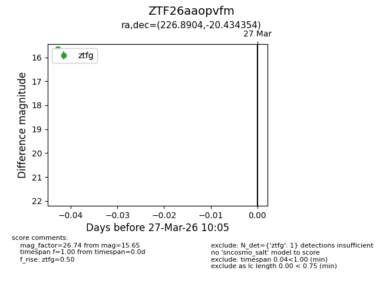
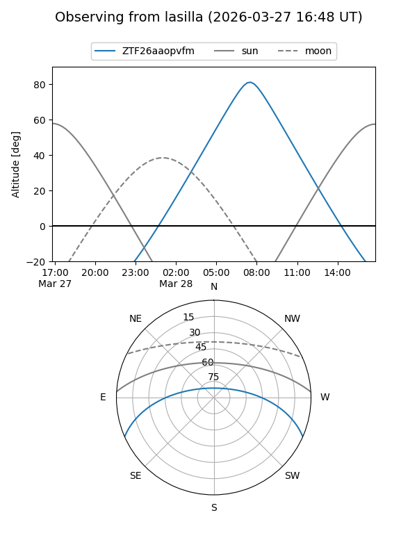
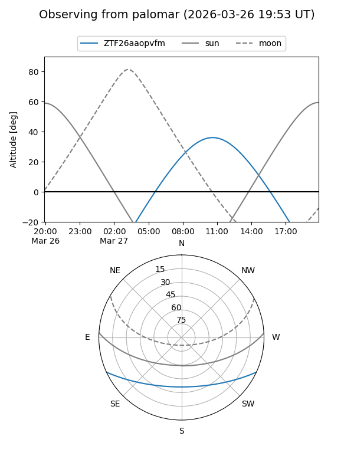

ZTF26aaopvfm
Target ZTF26aaopvfm at 2026-03-27 10:08
Aliases and brokers:
FINK: link
Lasair: link
ALeRCE: link
alt names
ZTF26aaopvfm (ztf,fink_ztf)
Coordinates:
equatorial (ra, dec) = 226.8904,-20.43435
equatorial (HMS+DMS) = 15:07:33.68,-20:26:03.67
galactic (l, b) = (341.1983,+32.13750)
Flags:
Photometry:
last ztfg=15.65
1 ztfg detections
Lightcurve

Visibility


Additional plots